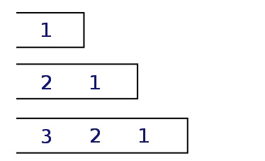
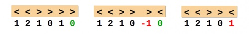

Стеки
Стек — динамическая структура данных, в которой добавление и
удаление элементов доступно только с одного конца (с верхнего
(последнего) элемента).
Существуют такие сокращения:
- LIFO = Last In -> First Out — с английского языка «Кто последним
вошел, тот первым вышел»
- FILO = First In -> Last Out — «первым вошел, последним вышел»
Последовательные этапы засылки в стек чисел 1,
2, 3

Над стеком выполняются следующие
операции:
- добавление в стек нового элемента;
add(<нач_стека>,<новый_элемент>):<нач_стека>
- определение пуст ли стек;
empty(<нач_стека>):boolean
- доступ к последнему включенному элементу,
вершине стека;
take(<нач_стека>):<тип_элементов_стека>
- исключение из стека последнего включенного
элемента.
del(<нач_стека>):<нач_стека>
Создание структуры узла:
type PNode = ^Node; { указатель на узел }
Node = record
data: char; { полезная }
next: PNode; { указатель на след. элемент }
end;
|
Добавление элемента в стек:
procedure Push( var Head: PNode; x: char);
var NewNode: PNode;
begin
New(NewNode); { выделение памяти }
NewNode^.data := x; { запись символа }
NewNode^.next := Head; { сделать первым узлом }
Head := NewNode;
end;
|
Забор элемента с вершины:
function Pop ( var Head: PNode ): char;
var q: PNode;
begin
if Head = nil then begin { если стек пустой }
Result := char(255); { неиспользуемый символ, т.е. ошибка }
Exit;
end;
Result := Head^.data; { берем верхний символ }
q := Head; { запоминаем вершину }
Head := Head^.next; { удаляем вершину }
Dispose(q); { удаление из памяти }
end;
|
Проверка, пустой ли стек:
function isEmptyStack ( S: Stack ): Boolean;
begin
Result := (S = nil);
end;
|
Объявления в основной
программе:
var S: PNode;
...
S := nil;
|
Рассмотрим подробную работу со стеком на примере:
Пример: вводится
символьная строка, в которой записаны теги в
угловых скобках (<>). Определить, верно ли
расставлены скобки (не обращая внимания на
остальные символы).
Алгоритм выполнения задания:

- изначально стек пустой;
- в цикле просматриваем каждый символ строки;
- если текущий символ – открывающая угловая
скобка, то вставляем ее на вершину стека;
- если текущий символ – закрывающая угловая
скобка, то проверяем верхний элемент стека: там
должна находиться открывающая угловая скобка
(иначе — ошибка);
- в конце стек должен стать пустым, иначе —
ошибка.
Создаем структуру стека:
const MAXSIZE = 50;
type Stack = record { стек рассчитан на 50 символов }
tags: array[1..MAXSIZE] of char;
size: integer; { число элементов }
end;
|
Процедура добавления элемента
в стек:
procedure Push( var S: Stack; x: char);
begin
if S.size = MAXSIZE then Exit; // выход, если произошло переполнение стека
S.size := S.size + 1;
S.tags[S.size] := x; // добавляем элемент
end;
|
Функция взятия элемента с
вершины:
function Pop ( var S:Stack ): char;
begin
if S.size = 0 then begin
Result := char(255); // 255 - пустой символ, ошибка - стек пуст
Exit;
end;
Result := S.tags[S.size];
S.size := S.size - 1;
end;
|
Создаем функцию для проверки,
пустой ли стек:
function isEmptyStack ( S: Stack ): Boolean;
begin
Result := (S.size = 0);
end;
|
Основная программа:
var expr: string;
br1, br2: char; { угловые скобки }
i, k: integer;
upper: char; { верхний символ, снятый со стека }
error: Boolean; { признак ошибки }
S: Stack;
begin
br1 := '<'; br2 := '>';
S.size := 0;
error := False;
writeln('Введите html-текст');
readln(expr);
... { здесь вставляется цикл с обработкой строки }
if not error and isEmptyStack(S) then
writeln('Текст верный.')
else writeln('Текст составлен неверно.')
end.
|
Обработка строки в цикле:
for i:=1 to length(expr) { проходимся по всем символам строки expr }
do begin
if expr[i] = br1 then begin { открывающая скобка < }
Push(S, expr[i]); { втолкнуть в стек }
break;
end;
if expr[i] = br2 then begin { закрывающая скобка < }
upper := Pop(S); { снять символ со стека }
error := upper <> br1; { ошибка: стек пуст или не та скобка }
break;
end;
if error then break; // была ошибка, значит, прерываем цикл
end;
|
|